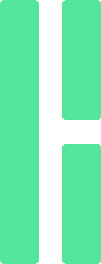
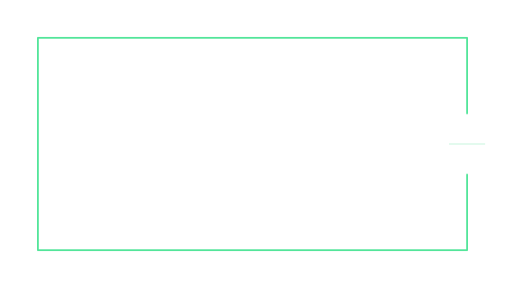
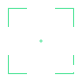

01 / Notice
See through the surface
Look past the noise, connect the signals, and understand what is really happening.

HyperNeoHyperNeo / Visual identity 01
HyperNeo helps people carrying consequential decisions cut through complexity and move with confidence. Its identity is quiet, exact, and capable: power held in reserve, made simple at the moment it matters.
01 / Brand idea
From Matrix-like information overload to the pressure of a founder’s next move, Neo sees the underlying pattern. The mark pares the Qian hexagram down to its center pair: a calm `1` beside an intentional `0`. It signals perception without spectacle, and complexity resolved into a clear next step.
01 / Notice
Look past the noise, connect the signals, and understand what is really happening.
02 / Understand
Turn many moving parts into a small number of clear, useful choices.
03 / Decide
Act with measured confidence, without mistaking calm for hesitation.
02 / The mark
Mark 06 uses neighboring Fibonacci dimensions: each bar is 55 units wide, and both openings are 34 units. Its 144 × 377 canvas gives it a slender, unmistakable silhouette. Keep the proportions and the open space exactly as drawn.
The uninterrupted bar stays on the left. The split bar stays on the right.
Never join the two right segments or close either gap. The pause is part of the idea.
Leave at least 34 design units around the mark. Keep adjacent text and interface edges outside this zone.
Use jade on deep forest, or the ink variant on paper. Avoid jade directly on white.
03 / Visual language
Jade marks the signal and the moment of action. Deep greens create a composed workspace. Warm paper and soft neutrals support long reading without turning the product into a neon Matrix pastiche.
Use jade as a precise accent; keep most screens neutral and easy to scan.
Approved foreground and surface combinations, measured for accessible text and marks.
| Pair | Ratio | Use |
|---|---|---|
| Paper / Night | 17.3:1 | Body text |
| Mist / Night | 14.9:1 | Secondary text |
| Jade / Night | 11.9:1 | Mark, action |
| Jade / Paper | 1.45:1 | Do not pair |
Color may reinforce meaning, but never carries status by itself. Pair every state with a label, icon, or shape.
| Token | Hex | Role |
|---|---|---|
| Jade | #53E59A | Focus / positive |
| Sky | #8ABCF4 | Context / neutral |
| Amber | #EFC276 | Watch / trade-off |
| Coral | #F38B80 | Risk / urgent |
04 / Patterns & components
The Qian mark supplies geometry, not decoration. Patterns stay low contrast and mostly monochrome; component lines create focus, structure a decision, or signal a considered pause.
Use as cropped backdrops or quiet texture at 8–16% opacity. Keep text on a solid, contrast-safe surface.
Open frames bracket a recommendation without enclosing it. The split rule carries the mark’s measured pause into editorial layouts.


01 / Layout
Use a 12-column grid, 24px gutters, and a 1200px content maximum. Align edges; let whitespace make hierarchy.
02 / Icons
Use 16, 20, or 24px sizes with a 2px rounded stroke. Avoid tiny internal details and decorative glows.
03 / Imagery
Choose natural light, architectural calm, and candid moments. Avoid code rain, sci-fi HUDs, and generic executive stock photos.
05 / Type & voice
Use a modern sans-serif for product and headlines, then reserve a monospaced face for small labels, metrics, and system state. Favor short statements, plain words, and specific recommendations.
“The acquisition is faster. The trade-off is less control over the roadmap.”
Say what matters, name the trade-off, and leave space for the person making the decision.
06 / In product
Neo should feel attentive in conversation and composed in the decision view. Use the mark as a quiet anchor, with status and recommendations written in the same clear voice.
Expand the existing partnership first. It reaches the market sooner and keeps the team focused. Revisit acquisition after the next revenue milestone.
A faster market test with lower execution load. Keep acquisition diligence active as a second-stage option.
Render the SVG at its natural ratio. In square avatars and favicons, center it on a high-contrast tile and keep its vertical silhouette intact.
07 / Motion & craft
Motion should help the user notice that Neo has focused or reached a conclusion. It should be subtle, short, and optional; the mark itself never morphs into a different shape.
Keep the solid left bar steady during thinking and response.
Let the two right segments arrive together with a small, quiet fade.
Use a single jade pulse when a recommendation is ready; do not loop it.
Honor reduced-motion settings and keep every static state fully legible.
08 / Brand files
Use SVG for product and web. PDF is suitable for print and presentations; EPS supports legacy print workflows. The logo mark is geometry only and scales cleanly at any size.
Jade · Ink · White · Favicon tile
Horizontal dark · Horizontal light · Horizontal white · Stacked dark
Jade mark PDF · Jade mark EPS · Dark lockup PDF · Dark lockup EPS
Browse every export
Signal field · Quiet grid · Decision frame · Split rule · Focus corner
Implementation notes and export guide · Identity system board
The SVG lockups keep the wordmark live in the Inter / Helvetica Neue system stack. PDF and EPS lockups use standard Helvetica text; convert the wordmark to outlines in your design tool before sending a printer a final mechanical.